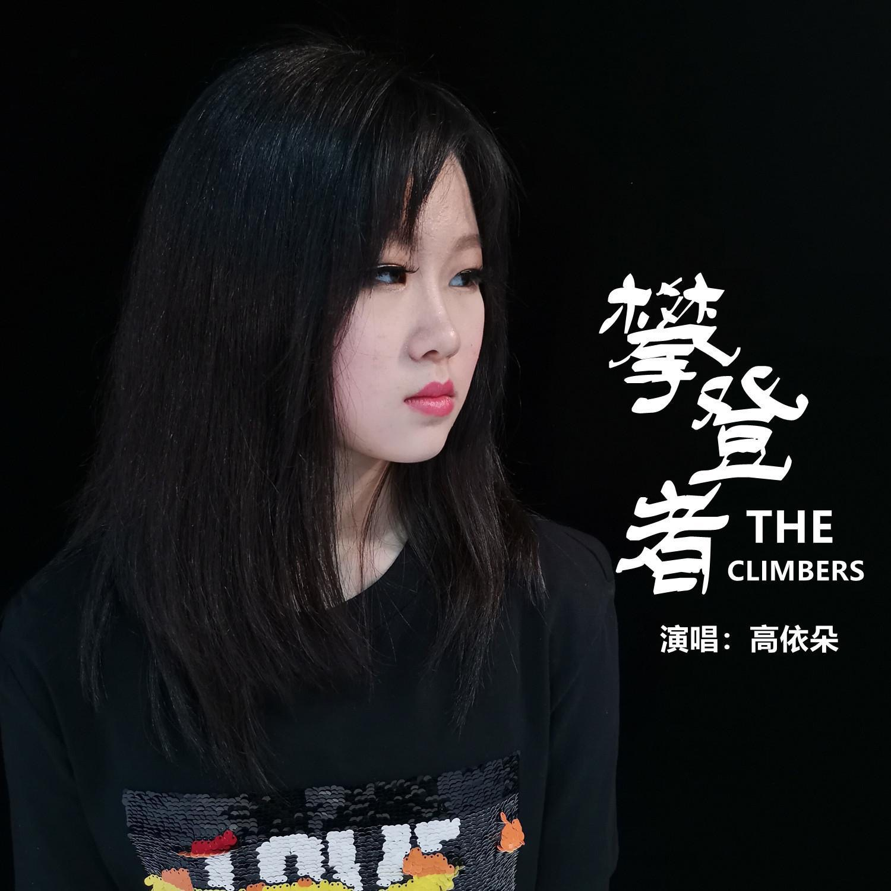
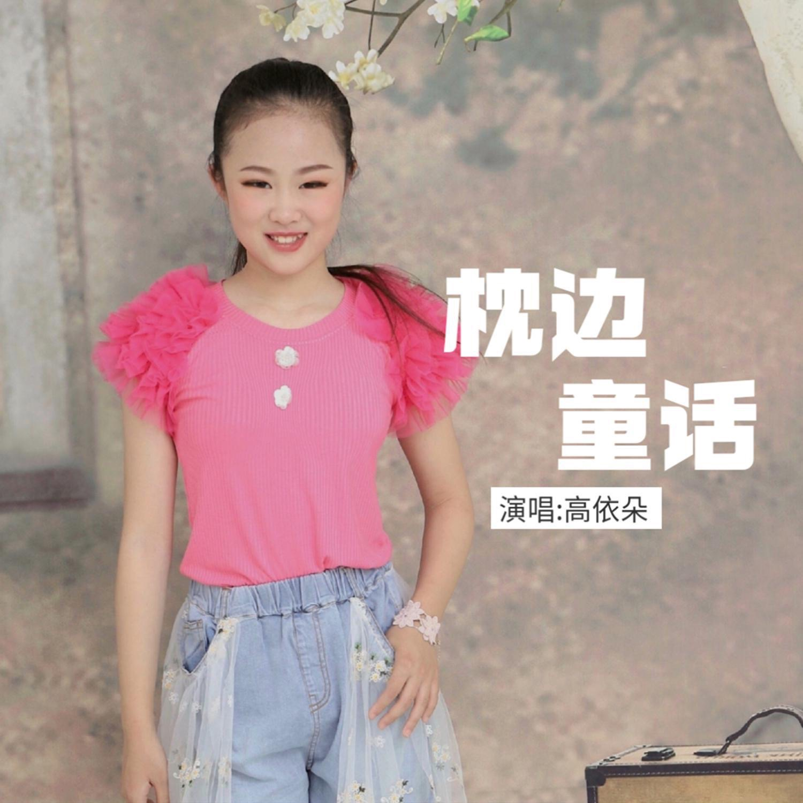
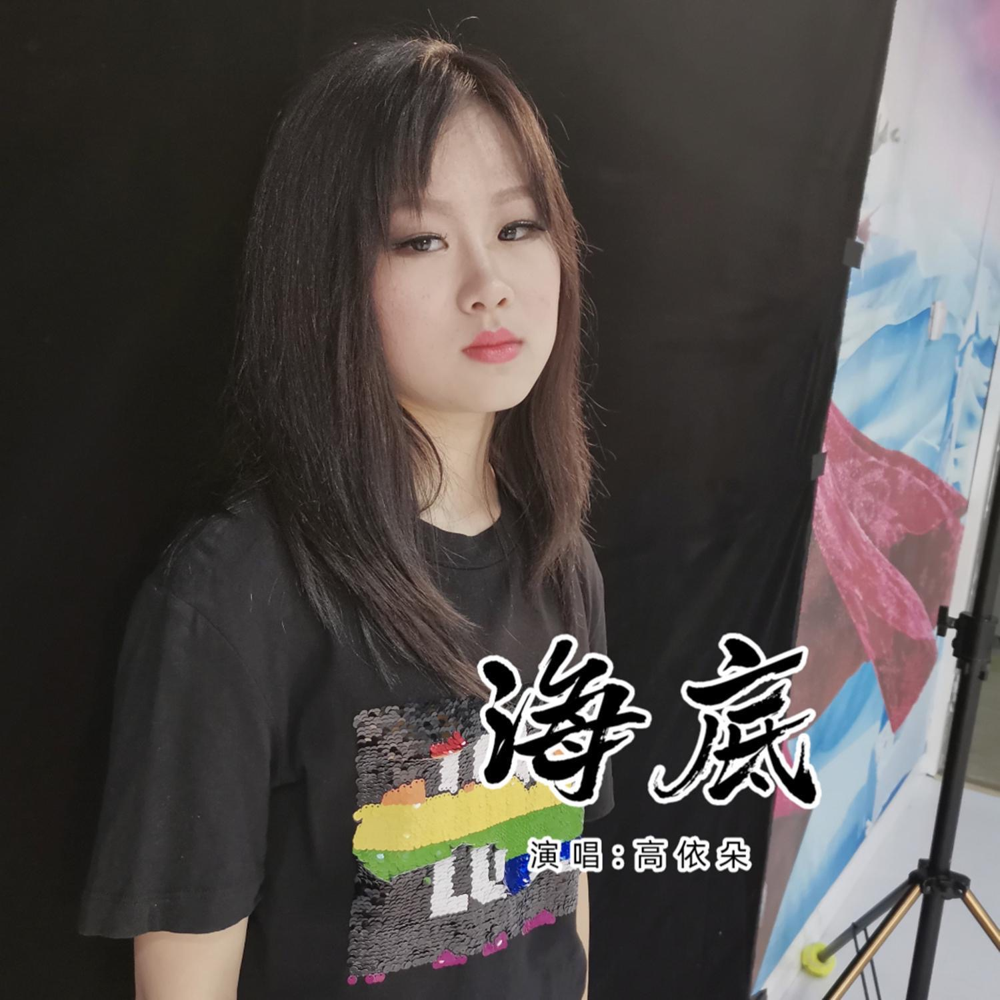
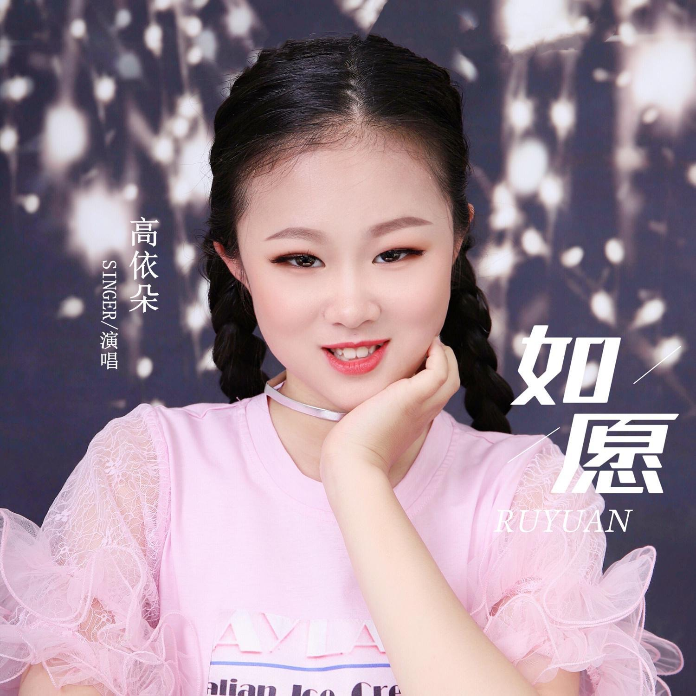
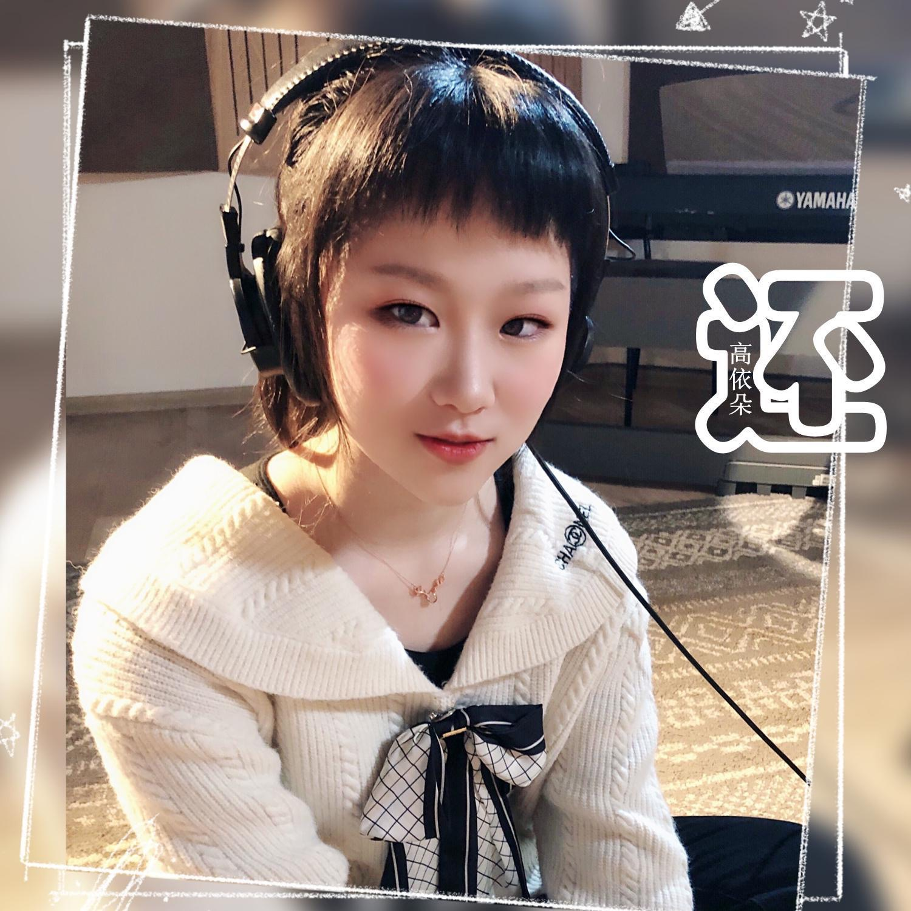
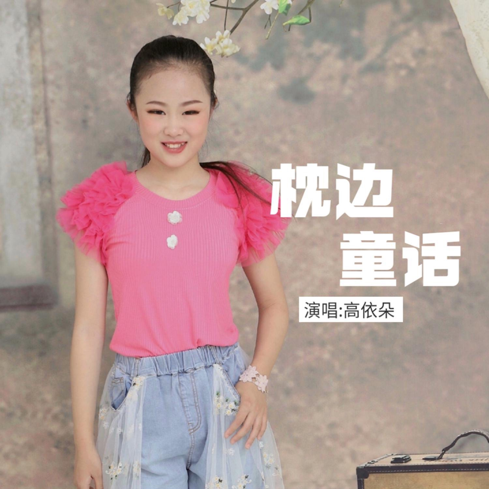
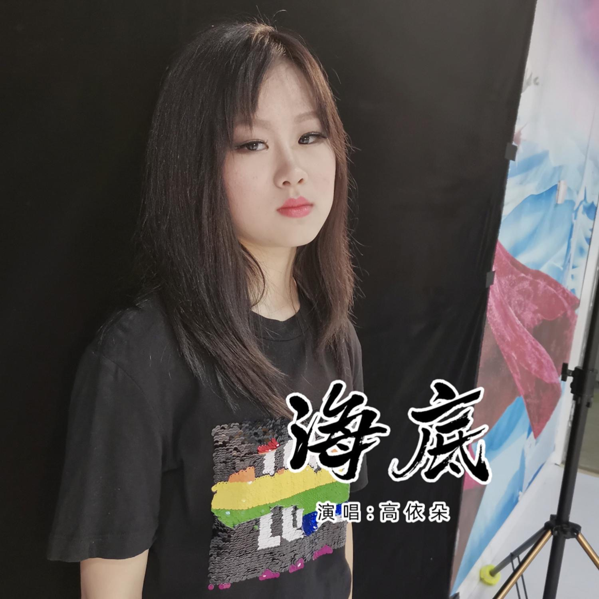
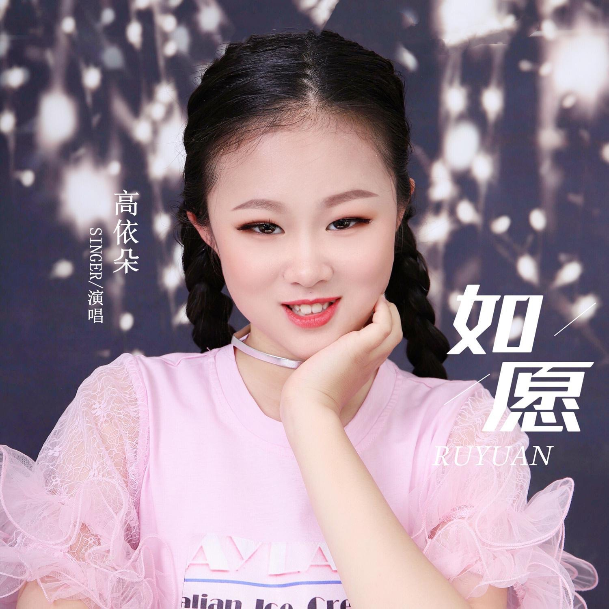
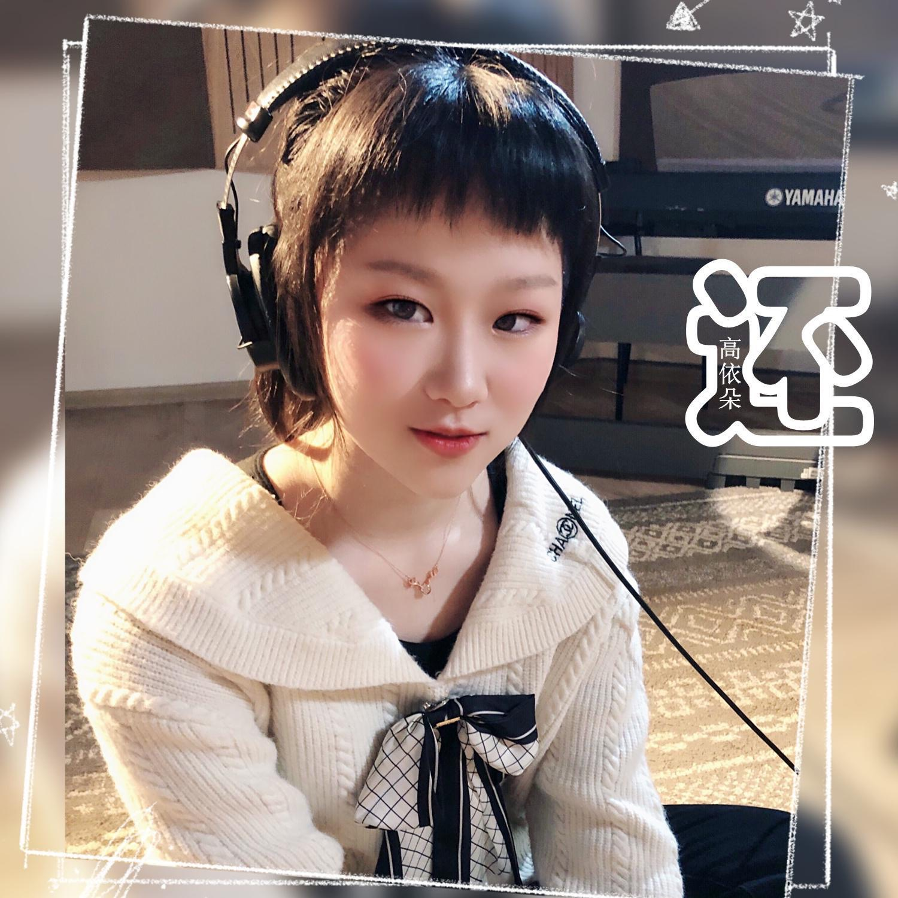

高依朵 Gao Yiduo
Female singer and child star in mainland China.
Brief introduction
Gao Yiduo is a female singer and child star in mainland China. Representative works such as "Once upon a River", "Time", "Memories of Those Years", and "Appointment to Grow Up Together" have won the National Gold Award for Solo Singing in the Happy Sunshine Chinese Children's Karaoke TV Competition. They have been awarded the title of "Star of Art" at the Haidian District Primary and Secondary School Students' Art Festival for three consecutive years, and have been invited to participate in programs such as CCTV and Beijing TV for several times.
Photos
 

Links to works (not fully collected yet)
光亮https://music.163.com/#/song?id=1985023889
归零https://music.163.com/#/song?id=1985023974
枕边的童话https://music.163.com/#/song?id=1838916583
是妈妈是女儿https://music.163.com/#/song?id=2023953209
[音乐快递]《一起长大的约定》 https://tv.cctv.com/2019/04/04/VIDEiW2azRPywJP1ZBkethOs190404.shtml
[音乐快递]《想梦一样自由》https://tv.cctv.com/2017/11/12/VIDElS7PgGNSyv2ooZeB0rrK171112.shtml
[音乐快递]《让世界充满爱》https://tv.cctv.com/2019/05/22/VIDE5QGBMffPEwc9aCfOlJ1v190522.shtml
The website is not yet complete, please understand if there are any errors. This website has obtained the consent of Gao Yiduo himself, and all fonts used on this website are open-source and royalty free fonts.